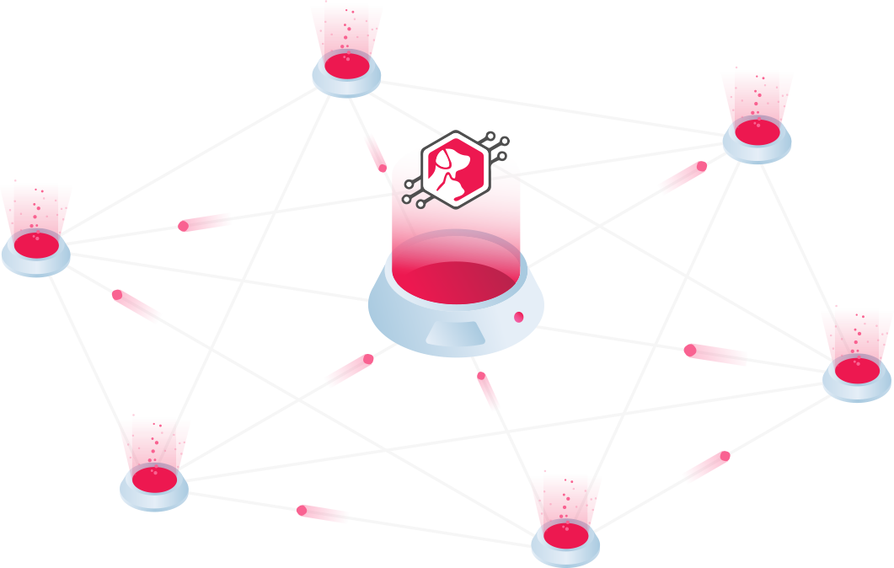

ペットナンバーとは？

ペットナンバー・プロジェクトは分散型のペット登録システムを開発するプロジェクトであり、ブロックチェーンを活用して効率的な技術インフラストラクチャを構築し、すべての動物福祉施設、シェルター、動物病院、メディア、人々、関連事業など幅広いつながりを確立させます。
私達は日本を世界で最もペットフレンドリーな国のひとつにしたいと考えています。また、人間と動物のよりよい社会のために、アジアと欧米のギャップを減らす架け橋になりたいと考えています。
生涯パートナーとしての責任感と意識の向上。
購入ではなく譲渡の促進。
悪質なペットビジネスの公然化。
達成すべき３つのキーポイント
ブロックチェーンとスマートコントラクトの必要性
ブロックチェーンは私たちの日々の生活に大きな影響を与えます。ブロックチェーンは、ネットワーク上のコンピュータ間での共有データベースであり、データベースの情報は誰もが閲覧をすることが可能です。インターネットの発明後の最大のテクロジーのひとつとされています。
また、契約の自動化が可能なスマートコントラクトを組み合わせる事により、ペット業界での透明生と信頼性を確立します。そして今、その技術を使い、人間と動物の両方にとってより良い世界を創造するために我々が協力し合う時が来ました。
ペットナンバーを使うメリット
- ペット流通の透明性の確保。
- ペットに関わる全ての人・団体・組織・サービスの法的な身分証明を確認、登録済み。
- 誰もがインスペクター（監視役）となる事ができ、虐待、悪質なビジネス活動を報告する事が可能。
- ペットや飼い主の状態、登録詳細をもとにしたパーソナライズサポート。
- 去勢・避妊手術、血統書、保険等の書類手続きの排除。
ペットナンバーは現在のペット流通を一新します

現在の不透明な流通システムにより、パピーミルなどの悪質な業者がペット業界にはびこる事が可能になっています。
ブロックチェーンを利用することによりペット業界に透明性をもたらし、上記のような深刻な問題を解決することができます。
分散型電子カルテ共有システム
どの動物病院でもアクセス可能なデータ共有システムを構築。
What's More?
全ては1つのペットナンバーから始まります。
ペットナンバーは効率的な技術インフラストラクチャを確立し、ブロックチェーン技術を利用して動物福祉機関、動物病院、メディア、および人々を幅広く結びつけます。
ペットナンバーは、シンプルで透明性のある寄付業界と譲渡インフラストラクチャ、アクセス可能な共有動物医療データベース、よりシンプルで使いやすいボランティア・マッチング/管理システムを提供することを目指しています。

ペットナンバー・マッチング・プラットフォーム（SNS）
動物愛護団体、ボランティア、スポンサー（寄付）、ペットオーナー達を繋げるソーシャル・ネットワーク。

ビッグデータを利用してペットナンバーが提供できるサービス
広告
効率的な広告戦略
- 複数のペットナンバーサービス・プラットフォームを介したデータをもとにした、的確で効果のある広告戦略。
- あなたのビジネスのマーケーティングを行います！
- 有料広告サービスもご利用いただけます。

データ解析
ビッグデータを解析して活用
- 顧客満足度を高め、ロイヤルティを構築。
- ビッグデータとAIの活用により、データはビジネスの発展にとって最も戦略的な資産であると私たちは認識しています。
ペットナンバーAPI
新しいサービスを生み出すためにAPIを公開
- 独自のアプリケーションを開発するために、ペットナンバーAPIをすべての開発者がアクセスできるように公開。
- 例：ペットヘルス、ペットホテル、里親探し、ペットパーソナリティ、ペットウォーカー＆シッター、ペット教育、ペットトレーニングアプリ等。

ペットナンバー・ウォレット
ペットナンバー・ウォレットはiOS、Android、およびWebプラットフォームで利用可能なデジタルアセット・ウォレット。
ペットナンバー独自通貨であるPETNトークンを含め、ビットコイン、イーサリウム、リップル等の暗号通貨の送受信をサポート。
 |
 |
 |
 |
|
| 送金 | 寄付 | 積立 | プラットフォーム | サービス |
プロジェクトの収益化
ペット登録料
ペット譲渡料

ペットナンバー・プレミアム

送金料

POSインテグレーション

広告
ビッグデータ解析

チャリティーイベント
PETNトークンICO

|

|

|

|

|
||
| ICO | プライベートセール | チーム | アドバイザー | インフルエンサー | リザーブ | バウンティ |

ペットナンバー・プロジェクトは日本から始まります

プロジェクト・ロードマップ
フェーズ 1
- プライベートセール（パートナー）
- イニシャル・コイン・オファリング ICO (一般)
- トークン配布 (My Ether Wallet)
- 分散型ペット登録プラットフォーム
- ペットナンバー・ウォレットアプリ (PETNトークン使用のみ)
フェーズ 2
- マッチング・プラットフォーム（SNS）
フェーズ 3
- 分散型電子カルテ共有システム
チーム

藤井 ヤス
創立者
藤井 ヤス
創立者
海外生活20年以上。米国サンフランシスコにアダプトした犬猫と住んでいる起業家。海外日本人SNSを運営、IT関連ビジネスの起業、インターネットマーケター、ビジネスコンサル、ICO NEWSサイトの運営を経験。デジタルアセットへの投資に2015年から参入。現在はブロックチェーンを使ったプロジェクト『Pet Number』のファウンダーとして、Decentralized Pet Registryの開発と関連するサービスの立ち上げを行なっている。

長尾 徹
共同創立者 / ウェブ開発
長尾 徹
共同創立者 / ウェブ開発
富士通コミュニケーションサービス勤務後、23歳で単身サンフランシスコに留学、サンフランシスコ州立大学にてコンピューターサイエンス学位を取得。「ペット愛護先進都市のサンフランシスコでの動物愛護の取り組みを目の当たりにしました。パピーミルや悪質引き取り業者が存在する日本独特のペット流通の不透明さという問題の解決に挑みます。」

乘越 さわこ
共同創立者 / 広報
乘越 さわこ
共同創立者 / 広報
法政大学GIS学部卒。UC Davisでの留学を機にシリコンバレーに強く関心を持つ。米国の日系新聞社で営業として勤務後、UC Berkeley ExtensionでマーケティングとBusiness Administrationを学ぶ。「幼少期にロンドンで触れたRSPCAの活動に強く感銘を受け、Pet Numberプロジェクト参加しました。動物だけでなく関わっている人のためにも、絶対成功させたいです。」